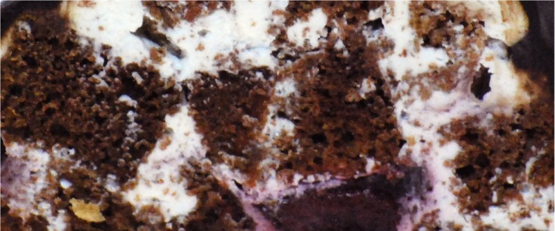

приготовление:
-
Приготовить шоколадный пирог. 60 г сливочного масла заранее оставить при комнатной температуре, чтобы оно стало мягким.
-
В миске соединить 250 г муки, 1,5 ч. л. соды, 1 ч. л. соли, 300 г сахара и 55 г какао. Хорошо перемешать венчиком.
-
Добавить 2 яйца, мягкое сливочное масло, 60 г оливкового или кокосового масла, 280 мл молока, ванильный экстракт и 1 ст. л. яблочного или винного уксуса 6%. Хорошо перемешать миксером до однородной массы.
-
Противень застелить пергаментом, при необходимости слегка смазать маслом. Вылить тесто и поставить в духовку.
-
Выпекать примерно 30–40 минут. Первые 25 минут духовку не открывать вообще. Затем начинать проверять готовность деревянной шпажкой — время может варьироваться в зависимости от духовки.
-
Готовый корж полностью остудить и нарезать на кубики размером примерно 3×3 см. Корж можно приготовить заранее и хранить в плёнке в холодильнике.
-
Для крема взбить 750 г сметаны 30% с 200 г сахарной пудры и ванильным экстрактом до однородности.
-
Собрать торт. В идеале каждый кусочек коржа обмакнуть в сметанный крем и выкладывать горкой, по желанию добавляя вишню между слоями. Как упрощённый вариант — выложить слой кусочков коржа, залить частью крема, затем снова слой коржа и крема, формируя горку.
-
Для глазури смешать 6 ст. л. сметаны, 6 ч. л. какао и 6 ст. л. сахара. Прогреть на слабом огне только до полного растворения сахара, не перегревая. Добавить 75 г сливочного масла и перемешать до гладкой, блестящей консистенции.
-
Полить торт глазурью. Готовый торт обязательно поставить в холодильник на ночь — это важно для хорошей пропитки и стабилизации.